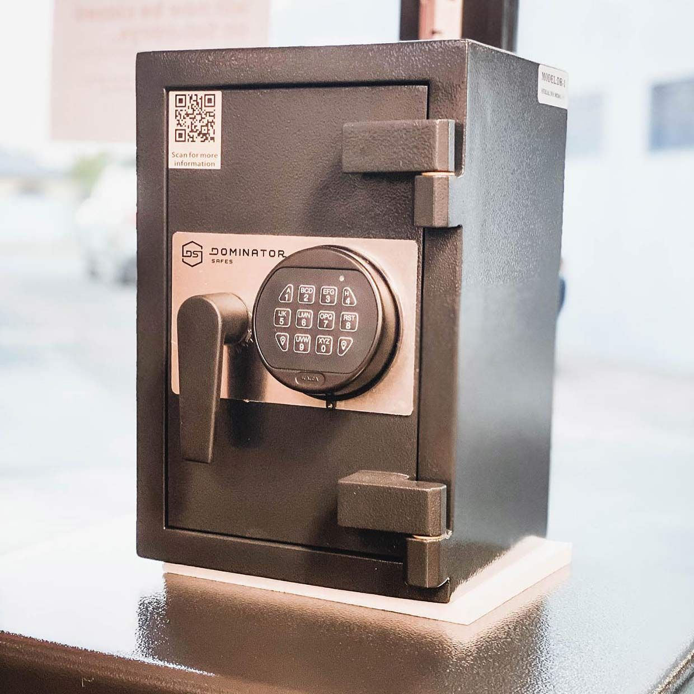
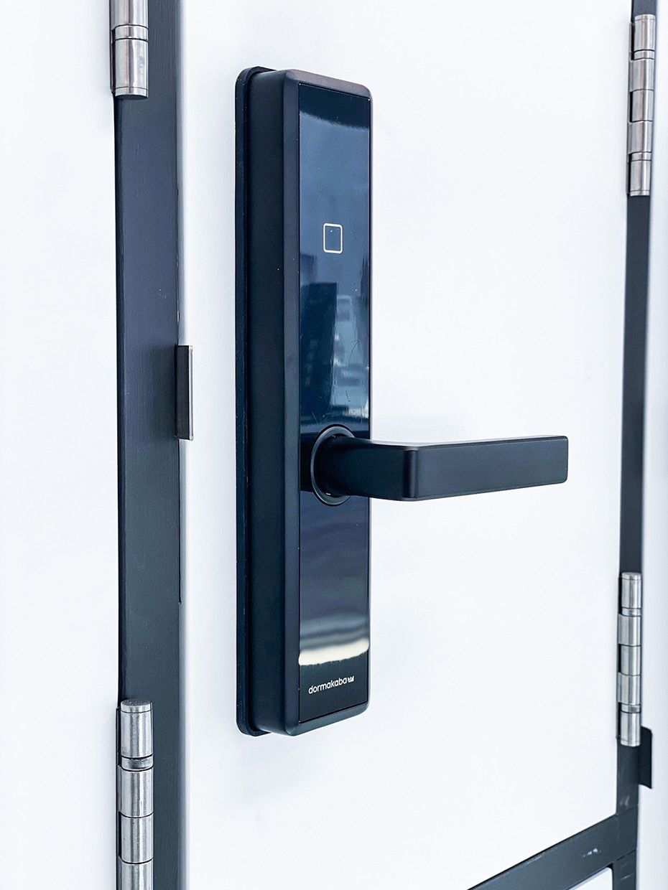
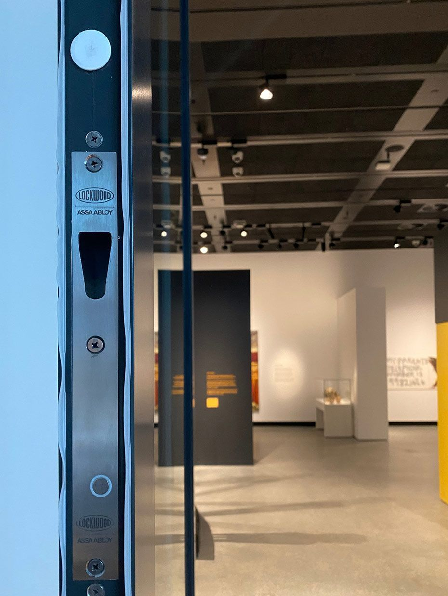

On this page
AT A GLANCE
At SPL Security Solutions, we provide 24/7 mobile locksmith services throughout Elanora, offering fast and professional assistance wherever you need it.
Get A Free Quote Now!
Thank you for contacting SPL Security Solutions.
We will be in touch soon.

Prompt Mobile Locksmith Solutions Elanora
At SPL Security Solutions, we provide 24/7 mobile locksmith services throughout Elanora, offering fast and professional assistance wherever you need it. Whether you’re locked out, dealing with a damaged lock, or looking to enhance your property’s security, our mobile team is equipped to help.
Our mobile units are fully stocked with the latest tools and a wide variety of lock components, allowing us to handle most issues on-site. From emergency repairs to planned upgrades, we deliver effective solutions tailored to your specific needs. With years of experience, our team ensures every service is carried out efficiently, helping you secure your home, business or vehicle properly.
Call us on (07) 5588 8111 for reliable mobile locksmith services in Elanora.
Our residential locksmith services in Elanora provide practical solutions for lockouts, lock repairs and security upgrades. We help keep your home and family safe with reliable and efficient service.
Our commercial locksmith services in Elanora cater to businesses of all sizes. From high-security lock installations to access control and emergency lock repairs, we offer customised solutions for your business needs.
Our automotive locksmith services in Elanora offer fast and reliable solutions for car lockouts, ignition issues and lost keys. We specialise in on-site transponder key programming and quick replacements to get you back on the road.
Our restricted key systems in Elanora enhance access control by preventing unauthorised key duplication. These systems are ideal for residential and commercial properties requiring an extra level of security.
We provide comprehensive safe services in Elanora, including unlocking, combination changes, and maintenance. Our safes are built to protect valuables from theft, fire and water damage.
Our security systems in Elanora integrate CCTV, alarms and access control to offer complete protection. We design tailored solutions to meet the unique requirements of homes and businesses.
Our lock hardware in Elanora feature durable and advanced options, including high-security deadbolts, childproof locks and smart systems. We ensure your locks are built to last and meet modern safety standards.
Enhance your property with our stylish and functional door hardware in Elanora. Choose from a variety of hinges, handles and sliding door systems designed to improve usability and security.
We offer a wide range of architectural door hardware, from fire-rated solutions to sleek door closers and elegant handles, suited for modern and classic designs in Elanora.
Emergency Locksmith Services Elanora
Unexpected situations can arise at any time, which is why we’re here to provide quick, dependable assistance.
- Accidental lockouts
Whether you’ve locked yourself out of your car, home, or office we offer prompt solutions to get you back inside safely. - Lost or stolen keys
Misplaced or stolen keys can leave your property at risk. We provide lock rekeying or replacements to restore security. - Damaged locks
Faulty or broken locks can compromise your safety. Our team repairs or replaces damaged locks to ensure your property is secure. - Malfunctioning digital locks
Electronic and smart locks can fail unexpectedly. We diagnose and fix these issues to keep your systems running smoothly. - Safe access problems
If you’re unable to open a safe or need the combination updated, we offer professional and damage-free solutions.

Contact Details
24/7 Emergency Locksmiths or Security Tech


Trading Hours
Retail Shop

Frequently Asked Questions
-
What should I do if my digital lock stops working?
If your digital lock malfunctions, check the batteries and connections first. If the issue persists, contact a locksmith for professional troubleshooting and repairs.
-
How can I prevent lockouts in the future?
To avoid lockouts, consider keeping a spare key in a secure location or giving one to a trusted friend or family member. Alternatively, upgrading to a keyless or smart lock system can eliminate the need for traditional keys altogether.
Locksmith & Security Solutions Gold Coast, Brisbane & Northern NSW